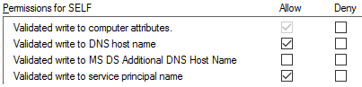

Control over ServicePrincipalName attribute of the unconstrained delegation account
After having obtained the Kerberos keys of the compromised account we can decrypt the tickets, but we haven’t discussed yet how to actually get hosts to authenticate to us using Kerberos. When a user or computer wants to authenticate with Kerberos to the host somehost.corp.com over SMB, Windows will send a request for a service ticket to the Domain Controller. This request will include the Service Principal Name (SPN), made up from the protocol and the host which the service is on. In this example this would be cifs/somehost.corp.com. The Domain Controller performs a lookup in the directory which account (if any) has this ServicePrincipalName assigned, and then uses the Kerberos keys associated with that account to encrypt the service ticket (I’m skipping on the technical details for now, you can find those in a later paragraph).
To make sure that victims authenticate to the account with unconstrained delegation and that we can decrypt the tickets, we need to make sure to send their traffic to a hostname of which the SPN is associated with the account we are impersonating. If we have the hostname attacker.corp.com and that SPN is not registered to the right account, the attack won’t work. The easiest way to do this is if we have control over an account that has privileges to edit attributes of the computer- or useraccount that we compromised, in which case we can just add the SPN to that account using the addspn.py utility that is included with krbrelayx:
user@localhost:~/adtools$ python addspn.py -u testsegment\\backupadmin -s host/testme.testsegment.local -t w10-outlook.testsegment.local ldap://s2016dc.testsegment.local
Password:
[-] Connecting to host...
[-] Binding to host
[+] Bind OK
[+] Found modification target
[+] SPN Modified successfully
If we don’t have those privileges, it is a bit more complicated, and for user accounts I haven’t found a way to modify the SPNs without having those rights assigned. Computer accounts can by default add their own SPNs via the “Validated write to servicePrincipalName” right, but they can only write SPNs that match their full hostname or SAMAccountName. This would seem like a dead end, but there is a way around this! There is an additional validated write right, which allows computers to update their own msDS-AdditionalDnsHostName property, which got introduced in Server 2012 and contains additional hostnames for a computer object. According to the documentation, this validated write allows us to add any hostname which has the FQDN of the domain that we are in as a suffix, as long as we have the Validated-MS-DS-Additional-DNS-Host-Name validated write right. This right is not assigned by default:

While playing with this property however, it turned out that the Validated-MS-DS-Additional-DNS-Host-Name validated write right isn’t actually needed to update the msDS-AdditionalDnsHostName property. The “Validated write to DNS host name”, which is enabled for computer objects by default, does also allow us to write to the msDS-AdditionalDnsHostName property, and allows us to assign any hostname within the current domain to the computer object, for which SPNs will then automatically be added. With this trick it is possible to add an SPN to our account that we can point to a hostname that is under the control of an attacker:
user@localhost:~/adtools$ python addspn.py -u testsegment\\w10-outlook\$ -p aad3b435b51404eeaad3b435b51404ee:7a99efdea0e03b94db2e54c85911af47 -s testme.testsegment.local s2016dc.testsegment.local
[-] Connecting to host...
[-] Binding to host
[+] Bind OK
[+] Found modification target
[+] SPN Modified successfully
user@localhost:~/adtools$ python addspn.py -u testsegment\\w10-outlook\$ -p aad3b435b51404eeaad3b435b51404ee:7a99efdea0e03b94db2e54c85911af47 s2016dc.testsegment.local -q
[-] Connecting to host...
[-] Binding to host
[+] Bind OK
[+] Found modification target
DN: CN=W10-OUTLOOK,CN=Computers,DC=testsegment,DC=local - STATUS: Read - READ TIME: 2018-11-18T20:44:33.730958
dNSHostName: W10-OUTLOOK.testsegment.local
msDS-AdditionalDnsHostName: TESTME$
testme.testsegment.local
sAMAccountName: W10-OUTLOOK$
servicePrincipalName: TERMSRV/TESTME
TERMSRV/testme.testsegment.local
WSMAN/TESTME
WSMAN/testme.testsegment.local
If for whatever reason we can’t modify the SPN to a hostname under the attackers control, we can always hijack the current SPN by modifying the DNS record or using your favorite spoofing/mitm attack, though this will break connectivity to the host, which I wouldn’t recommend in production environments.